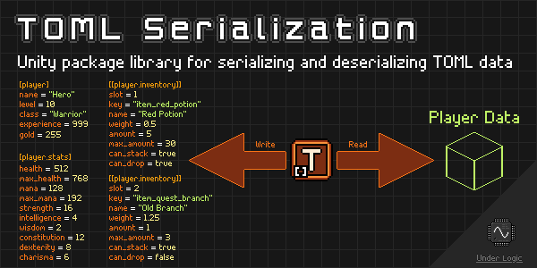

Overview

Unity package library for serializing and deserializing TOML data.
NOTE: This package is still in development and may have breaking changes in future versions until a stable v1.0.0 release is made.
What is TOML?
TOML is a relatively newer file format, similar to JSON and YAML files, used for storing data in a human-readable format.
Why use TOML?
- Simple and straightforward format.
- Easy to read and write, especially for humans.
- Less overhead and control characters than JSON.
- Supports comments.
Why use this package?
While there are various TOML libraries available for .NET, this package aims to provide a simple and easy to use API for serializing and deserializing TOML data in Unity.
It aims to provide a familiar API to Unity's JsonUtility API for serializing and deserializing JSON data.
Additionally, it provides ways to customize the serialization process via attributes similar to those in Microsoft's System.Text.Json namespace.
It is also covered with unit tests to ensure the reliability of the package library as new features are introduced.
Compatibility
This package is compatible with Unity 2019.1 and later. It only uses C# 7.3 features and targets .NET Framework 4.6.
While it is recommended to use one of the latest LTS releases of Unity, there are older projects that may opt to use this library.
Limitations
While this package does implement most of the TOML 1.0 specification, it is not intended to support every aspect of the specification.. It is intended to provide a simple, easy-to-use, and performant library for serializing and deserializing objects to and from TOML format for the majority of use cases.
That means when importing TOML files generated by other libraries or programs, there may be some issues with deserialization. However, if you are using this library to generate TOML files, you should not have any issues.
Changelog
All notable changes to this library will be documented in this file.
The format is based on Keep a Changelog, and this project adheres to Semantic Versioning.
[0.4.10] - 2023-05-01
Changed
- Use custom
IsEquivalentTocomparison method to preventGetHashCodeoverride warnings
Fixed
- Missing
.metafile
[0.4.9] - 2023-01-13
Fixed
TomlInlineAttributenow properly applied to complex types during serialization
[0.4.8] - 2023-01-13
Fixed
- Nested table and table array keys are now properly prefixed with the parent table key when serialized
- Empty table keys are no longer serialized (as they are not necessary)
- Nested tables and table arrays are now properly deserialized
[0.4.7] - 2023-01-09
Fixed
- Escape whitespace strings in non-multiline strings
- Escape
\fform-feed character in strings - Unescape whitespace chars in character and string arrays
- All code is now C# 7.3 and .NET Framework 4.6 compatible for Unity 2019.1+
[0.4.6] - 2023-01-04
Added
TomlCamelCaseAttributecustom attributeTomlPascalCaseAttributecustom attributeTomlSnakeCaseAttributecustom attribute (allow for uppercase)TomlKebabCaseAttributecustom attribute
Removed
TomlCasingAttributecustom attribute in favor of specific ones
[0.4.5] - 2023-01-04
Added
TomlHexNumberAttributecustom attributeTomlOctalNumberAttributecustom attributeTomlBinaryNumberAttributecustom attributeTomlDateTimeFormatAttributecustom attribute
Removed
TomlNumberFormatAttributecustom attribute in favor of specific ones
[0.4.4] - 2023-01-02
Added
- Serialization support for
PositiveInfinity,NegativeInfinityandNaNvalues - Deserialization support for
PositiveInfinity,NegativeInfinityandNaNvalues TomlNumberFormatAttributefor serializing integer values in different formats- Deserialize
hexinteger values (e.g.0xdead_beef) - Deserialize
octinteger values (e.g.0o755) - Deserialize
bininteger values (e.g.0b1101010) - Unit tests for number formats and digit separators (e.g.
1_000_000)
[0.4.3] - 2022-12-31
Added
TomlMultilineAttributecan be applied to arrays and lists to serialize them as multiline TOML arraysTomlLiteralAttributecan be applied to lists of strings to serialize them as TOML literal stringsTomlLiteralAttributecan be applied to dictionaries of strings to serialize them as TOML literal strings
[0.4.2] - 2022-12-31
Added
- Deserialization support for multiline arrays (including jagged arrays)
Fixed
- Allow trailing commas for arrays
[0.4.1] - 2022-12-30
Added
TomlLiteralAttributecustom attribute for serializing literal stringsTomlMultilineAttributecustom attribute for serializing multi-line strings (including literals)TomlInlineAttributecustom attribute for serializing inline tables explicitlyTomlExpandAttributecustom attribute for serializing expanded tables explicitly- More unit tests for various serialization cases
Changed
TomlFloatvalues can be coerced into integer values (will be truncated)
[0.4.0] - 2022-12-30
Added
TomlKeyAttributecustom attribute for overriding the TOML key of a fieldTomlCasingAttributecustom attribute for overriding the TOML key casing of an object or field
Fixed
- Excessive escaping of strings in TOML output
[0.3.5] - 2022-12-29
Added
- Deserialization of multiline basic strings using
"""syntax - Deserialization of multiline literal strings using
'''syntax - Deserialization of unicode escape sequences in basic strings using
\uXXXXsyntax - More documentation on deserialization rules
- Proper escaping of serialized strings
Changed
- Updated icons for
TomlImporterandTomlExportercomponents
Fixed
- Now properly ignores inline comments when parsing TOML
- Ignore escape sequences in literal strings
[0.3.4] - 2022-12-28
Added
- Serialization of jagged arrays
- Unit tests for jagged arrays
Changed
- Made
HasDefaultConstructormethod private, as it is an internal helper method
Fixed
- Escaping of quoted strings
[0.3.3] - 2022-12-27
Added
TomlImportercomponent to import TOML files into Unity objects- Custom editor for
TomlExportercomponent - Custom editor for
TomlImportercomponent - Sample scene for
TomlImportercomponent - Icons for
TomlExporterandTomlImportercomponents
Changed
- Renamed
sourceObjecttotargetObjectforTomlExportercomponent - Removed
outputDirectoryfromTomlExportercomponent - Renamed
defaultFilenametooutputFileforTomlExportercomponent - Updated documentation
[0.3.2] - 2022-12-27
Added
- Unit tests for bidirectional serialization to and from TOML
- Support for serializing nested objects using dot (
.) notation
Fixed
- Serialization of arrays and lists containing
nullvalues - Serialization of mixed arrays and lists containing nested arrays and lists
- Serialization of mixed dictionaries containing arrays and lists
[0.3.1] - 2022-12-26
Fixed
- Serialization order of tables and arrays within another table
[0.3.0] - 2022-12-26
Added
Deserializemethods forTomlSerializerstatic class- Unit tests for
Deserializemethods - Unit tests for
Serializemethods - Updated documentation
Changed
Serializenow only serializesIListinstead ofIEnumerablefields
Fixed
- Escape double quotes and backslashes in serialized strings
[0.2.0] - 2022-12-21
Added
TomlExportercomponent for exporting TOML files from Unity objects- Documentation for
TomlExportercomponent - Exporter sample scene
- Serializer sample scene
Fixed
TomlSerializernot putting a new line space between tables
[0.1.0] - 2022-12-20
Added
TomlSerializerclass for serializing objects to TOML format- Unit tests for
TomlSerializerclass - Documentation for
TomlSerializerclass - Documentation for serialization rules
- Documentation for supported types
Installation
OpenUPM
OpenUPM is an open source Unity package registry that allows you to easily install thousands of packages.
You can install this library with the following CLI command:
$ openupm add com.underlogic.toml-serialization
Git URL
Starting with Unity 2019.3 you can add packages via git url.
You can add this package by the following url: https://github.com/UnderLogic/runtime-variables
Using this method will allow you to update the package through the Unity Package Manager.
Local Package
Alternatively, you can clone the git repository and add the package locally.
Getting Started
Context
TOML is a data format similar to JSON, but looks like an INI file. It is designed to be easy to read and write by humans, and is a good alternative to JSON for configuration files.
It also maps well to hash tables and dictionaries, which makes it a good choice for serializing data.
Samples
The Samples~ folder contains sample scenes showcasing various aspects of the library in action.
It is recommended to import and play around with them in Unity to get a feel for how to use the library.
Define a Model
Overview
The first step to using TOML in Unity is to define a model class (or struct) that represents the data you want to serialize or deserialize.
It can be as simple as a single class, or it can be a complex hierarchy of classes. The serializer will automatically serialize and deserialize the entire object graph, if possible.
A common use case is to define a model class that represents a configuration file, let's say PlayerSettings:
Player Settings Model
[Serializable]
public class PlayerSettings
{
private string _playerName = "Player";
private int _credits;
private string _difficultyLevel = "Normal";
private float _soundVolume = 1.0f;
private float _musicVolume = 1.0f;
// ... other fields
[NonSerialized]
private DateTime _lastSavedAt; // will not be serialized
}
The model class must be marked with the SerializableAttribute attribute, which tells the serializer to include the class in the serialization process.
If you have fields you do not want to be serialized, you can mark them with the NonSerializedAttribute attribute.
They will be ignored by the serializer and deserializer.
Field Attributes
The TOML serializer supports a number of attributes that can be applied to fields to control how they are serialized and deserialized.
For more information on the attributes, see the Attributes page.
Constructors
It is recommended that you have a parameterless constructor for your model classes. You can use constructor chaining to call a constructor with parameters, if you need to.
This is because the serializer will create an instance of your model class using the parameterless constructor, and then populate the fields using the deserialized data. If you do not have a parameterless constructor, the serializer will throw an exception.
By default, all classes have a parameterless constructor, but if you have a custom constructor, you will need to add a parameterless constructor yourself. All structs have a parameterless constructor as they are value types.
Serializing to a File
In the next step, we will serialize the PlayerSettings model to a TOML file.
Serialize to File
Overview
Once you have defined a model, you can serialize it to a TOML file. You can also load it from a TOML file if you have a model that matches the structure of the file.
In this example, we are going to assume this is the first time we are serializing this model so no file exists yet.
Serializer Example
In order to serialize a model to a TOML file, you need to use the TomlSerializer Serialize static method.
To do this in Unity, we can create a simple MonoBehaviour that does this on the Start method.
Alternatively, you can use the TomlExporter which does this for you, assuming your data is a ScriptableObject.
using System.IO;
using UnityEngine;
public class PlayerSettingsSaver : MonoBehaviour
{
private PlayerSettings _playerSettings;
private void Awake()
{
// Initialize the player settings
_playerSettings = new PlayerSettings();
}
private void Start()
{
// Save the player settings to a TOML file in the persistent data path
var filePath = Path.Combine(Application.persistentDataPath, "player-settings.toml");
TomlSerializer.Serialize(settings, filePath);
}
}
As you can see, we are creating a new instance of the PlayerSettings class and then serializing it to a file.
Obviously, you would want to do this when the player saves their settings, but for the sake of this example, we are doing it on the Start method.
TOML Output
playerName = "Player"
credits = 0
difficultyLevel = "Normal"
soundVolume = 1.0
musicVolume = 1.0
Load from a File
In the next step, we will load the PlayerSettings model from a TOML file.
Deserialize from File
Overview
Once you have defined a model, you can deserialize it from a TOML file.
In the previous step, we serialized a PlayerSettings model to a TOML file.
In some cases you may only be consuming TOML files and not creating them. You can still use the TOML serializer to deserialize a model from a TOML file.
Deserializer Example
In order to deserialize a model from a TOML file, you need to use the TomlSerializer Deserialize or DeserializeInto static methods.
To do this in Unity, we can create a simple MonoBehaviour that does this on the Start method.
Alternatively, you can use the TomlImporter which does this for you, assuming your data is a ScriptableObject.
using System.IO;
using UnityEngine;
public class PlayerSettingsLoader : MonoBehaviour
{
private PlayerSettings _playerSettings;
private void Awake()
{
// Initialize the player settings
_playerSettings = new PlayerSettings();
}
private void Start()
{
// Load the player settings from a TOML file in the persistent data path
var filePath = Path.Combine(Application.persistentDataPath, "player-settings.toml");
using (var reader = new StreamReader(filePath))
{
TomlSerializer.DeserializeInto(reader, _playerSettings);
}
}
}
As you can see, we are creating a new instance of the PlayerSettings class and then deserializing it from a file.
Obviously, you would want to do this on application load but for the sake of this example, we are doing it on the Start method.
Deserialize vs. DeserializeInto
There are two ways to deserialize a model from a TOML file, and they behave the same way.
The Deserialize<T> method will create a new instance of the model and return it.
The requirement is that the T being passed in is a class or struct that has a parameterless constructor.
In some cases, you may want to deserialize a model into an existing instance.
You can use the DeserializeInto<T> method for this.
This is common when you are loading a model from a file and then updating it with new values. Or the type you are deserializing does not have a parameterless constructor.
Scriptable Objects
One example of needing the DeserializeInto method this is when deserializing a ScriptableObject in Unity.
You may have an existing instance of a ScriptableObject that you want to deserialize into.
// Assume PlayerSettings is a ScriptableObject
// Deserialize into an existing ScriptableObject
TomlSerializer.DeserializeInto(tomlString, _playerSettings);
// Deserialize into a new ScriptableObject
var newSettings = ScriptableObject.CreateInstance<PlayerSettings>();
tomlSerializer.DeserializeInto(tomlString, newSettings);
// This will not work with ScriptableObjects, use the above instead
var newSettings = TomlSerializer.Deserialize<PlayerSettings>(tomlString);
You can also do the same for deserializing into MonotBehaviour instances.
Supported Types
This package library aims to support the most common use cases for serializing and deserializing data.
To see more information how these are serialized into TOML, see the Serialization Rules page sections.
Scalars
The following scalar types are supported:
boolcharstringsbyteshortintlongbyteushortuintfloatdoubleDateTime
NOTE: Unsigned 64-bit integer types (ulong) are not supported, per the TOML specification.
Enum Values
Enum values are supported including bitflags marked with the FlagsAttribute.
Object Values
Boxed object values are supported.
This can be useful when used in conjunction with arrays, lists, and dictionaries for mixed collections.
Structs
Custom struct types are supported and must be marked with the SerializableAttribute attribute.
Classes
Custom class types are supported and must be marked with the SerializableAttribute attribute.
Unity's ScriptableObject and MonoBehaviour types are supported.
Arrays
Arrays of any supported type are allowed and can be serialized. Jagged arrays are supported, but multidimensional arrays are not.
Lists
Lists of any supported type are allowed and can be serialized.
This includes IList non-generic and IList<T> generic interfaces.
Dictionaries
Dictionaries are supported if TKey is string and TValue is one of the supported types.
This includes custom types, array types, and nested dictionary types as a value.
Limitations
Overview
This package library is not intended to support every aspect of the TOML 1.0 specification.
Instead, it is intended to provide a simple, easy-to-use, and performant library for serializing and deserializing objects to and from TOML format for the majority of use cases.
With that, there are some limitations to the serialization process. These may be solved in future versions of the library.
Field Name Collisions
When serializing an object to TOML, the library will attempt to use the field name as the key in the TOML document.
It will strip the leading underscore (_) from the field name if it exists and use the remaining name as the key.
If the object being serialized has two fields, one named _name and the other named name, the library will throw an exception.
Example
[Serializable]
public class SomeObject
{
private string _name;
private string name; // <-- Will throw an exception on serialize
}
This is usually not a problem, as you should not have two fields with the same name in the same object.
Workarounds
- Rename one of the fields.
- Use the
TomlKeyAttributeattribute to specify a different key name for the field. - Use the
NonSerializedAttributeto exclude one of the fields from serialization.
Key Names
When serializing an object the library will attempt to use the field name as the key in the TOML document.
For nested objects beyond the first level, the library will use dot (.) notation to represent the table name.
For key-value pairs, the key will never be serialized using dot notation.
The library does not attempt to escape the key names in any way. This is usually not a problem, as C# field names usually are alphanumeric.
Multiline Inline Tables
This library does not support multiline inline tables. However, standard tables are supported as well as single-line inline tables.
Example
# This is a valid standard table that spans multiple lines.
[table]
value = "bar"
# This is a valid single-line inline table.
inline_table = { foo = "bar", baz = "qux" }
# This is an invalid multiline inline table.
inline_table = {
foo = "bar",
baz = "qux"
}
The TOML specification highly recommends using standard tables over inline tables where possible.
Interfaces
This library does not support two-way serialization of fields that represent interfaces. This is because the library does not know which concrete type to use when deserializing the data.
Since fields can be made private you should not need to serialize interfaces. Instead your backing fields should be of the concrete type, and the interface should be a property that can be accessed publicly.
Abstract & Derived Classes
This library does not support two-way serialization of abstract or base classes. This is because the library does not know which concrete type to use when deserializing the data.
When deserializing a base class, the library will only serialize the fields that are defined in the base class. This can cause issues if the concrete type has additional fields that are not defined in the base class.
You should always use specific concrete types when serializing and deserializing data.
Deeply Nested Objects
When serializing deeply nested objects, the library may incorrectly serialize the object or inline some of the fields.
While this is not a problem for most use cases, it is something to be aware of if you notice awkwardly formatted TOML documents.
Multidimensional Arrays
This library does not support multidimensional arrays. This is because it is not possible to represent multidimensional arrays in TOML.
However, jagged arrays ("arrays of arrays") are supported for scalar types.
They must be all of the same type, or boxed as object arrays.
For example, you can use int[][] but not int[,].
Unsigned 64-bit Integers
The ulong type is not supported by the TOML specification, so they are not supported by this library.
Unsigned 32-bit integers (uint) are supported, however.
You can use signed 64-bit integers (long) instead, as they are supported by the TOML specification.
All integer values are stored as signed 64-bit integers in the TOML document.
If you need large integer values, use long instead of int or uint.
Floating Point Precision
When serializing floating point numbers, the library will use the default precision of the double type, which is 15 digits.
Any digits beyond the 15th will be rounded.
This is usually not a problem, but it is something to be aware of if you notice floating point numbers being rounded.
Monetary Values
The decimal type is not supported. For storing monetary values, either use a string for the value or int for the value in cents.
Due to rounding errors, the float and double types are not recommended for storing monetary values.
Example
[Serializable]
public class InAppPurchase
{
private int _priceInCents = 1299;
private string _price = "12.99"
}
Under the Hood
Overview
This document is intended for developers who wish to understand the inner workings of the TOML serializer. It is not required reading for users of the library.
It also serves as documentation for the serialization and deserialization process at a more granular level.
All of these are marked as internal and not exposed to the public API of this library.
The only exception is the TomlSerializer class, which is the entry point for serialization and deserialization.
Marshalling
The TomlSerializer uses an internal marshalling process to convert objects to and from TOML.
These objects serve as a bridge between the TOML document and the object being serialized or deserialized.
These are the TomlValue derived classes below:
TomlNullTomlBooleanTomlDateTimeTomlFloatTomlIntegerTomlStringTomlArrayTomlTableTomlTableArray
The TomlArray, TomlTable and TomlTableArray can contain any of the above types as well (nested).
The TomlTable can be inline or standard (expanded). This is determined by the TomlTable.IsInline property.
Serialization
The serialization process is broken down into three steps done by the TomlSerializer class:
- Iterate over the object's fields
- Marshal each field's value into a TOML value (recursively)
- Write the TOML root table
Field Iteration
The TomlSerializer class iterates over the fields of the object using reflection, ignoring any fields marked with the NonSerialized attribute.
It will recursively iterate over any nested objects, and supports arrays, lists, and dictionaries.
Field Marshaling
The TomlSerializer class converts each field's value into a TomlValue based on the field's type.
See the above possible TomlValue types.
The value is added to the root table, child table, or child array using the field's name as the key.
Root Table Writing
The TomlSerializer class writes the root table to the TOML document using the TomlWriter class.
The TomlWriter class is responsible for writing the TOML document to a string, stream, or writer and all of the formatting.
Deserialization
The deserialization process is broken down into three steps done by the TomlSerializer class:
- Parse the TOML document into marshalled objects
- Create the deserialized object
- Unmarshal the TOML root table into the deserialized object (recursively)
NOTE: In the DeserializeInto method, the deserialized object is passed in as a parameter instead of being created.
TOML Document Parsing
The TomlSerializer class reads the TOML document using the TomlReader class.
The TomlReader class is responsible for reading the TOML document from a string, stream, or reader and parsing it into TomlValue objects.
The TomlLineBuffer class is used to aid parsing of multiline strings, lists, and dictionaries.
It acts as an enumerable over the actual lines of the document (ignoring comments and whitespace).
Object Creation
The TomlSerializer class creates the deserialized object using the Activator or Array static class methods.
This is done by calling the default constructor of the object's type.
Field Deserialization
The TomlSerializer class converts each parsed TomlValue to the field's type and sets it.
This includes scalar values, complex types, arrays, lists, and dictionaries.
Field Selection
Overview
This library uses reflection to determine which fields to serialize and deserialize within an object.
By default, all public and private instance fields are serialized and deserialized unless they are marked with the NonSerializedAttribute.
Properties are not serialized or deserialized. This is because properties may not have a backing field, or may be read-only.
Field Naming
Overview
This library uses reflection to determine the name of each field when serializing an object into TOML.
By default, the name of each field is used as the key in the TOML document.
This can be overridden by using the TomlKeyAttribute.
Any leading underscores (_) are removed from the field name before it is used as the key in the TOML document, unless explicitly named.
Name Casing
By default, each field is named as-is using the same casing as the field name.
This can be overriden by using one of the casing attributes:
Example
[Serializable]
public class PlayerCharacter
{
private string _name;
private int _level;
private int _experience;
}
This object will be serialized to the following TOML document:
name = "Hero"
level = 7
experience = 1250
Notice that the leading underscore (_) was removed from the field names in the TOML document.
Field Ordering
Overview
This library uses reflection to determine the order of each field to serialize and deserialize within an object.
By default, the fields are serialized and deserialized in the order they are declared in the object.
Table Order
When writing the object as a TOML table, the fields are written in the following way:
- All key-value pairs of the table are written.
- All nested tables are written.
- All nested table arrays are written.
This is done recursively for each nested table.
Example
[Serializable]
public class PlayerCharacter
{
private string _name;
private int _level;
private int _experience;
private PlayerStats _stats;
private List<InventoryItem> _inventory;
}
This object will be serialized to the following TOML document:
name = "Hero"
level = 7
experience = 1250
[stats]
health = 100
mana = 50
[[inventory]]
name = "Sword"
durability = 84
[[inventory]]
name = "Shield"
durability = 99
Notice that fields are written in the order they are declared in the object, and nested tables are written after the key-value pairs of the parent table.
Even if the _stats and _inventory fields were declared before the _name, _level, and _experience fields, they would still be written after them.
Field Mapping
Overview
This library uses reflection to determine the name of each field when deserializing TOML into an object.
By default, the name of each field is used as the key in the TOML document.
This can be overridden by using the TomlKeyAttribute.
Any leading underscores (_) are removed from the field name before it is used as the key in the TOML document, unless explicitly named.
Name Casing
By default, each field is named as-is using the same casing as the field name.
This can be overriden by using one of the casing attributes:
Example
[Serializable]
public class PlayerCharacter
{
private string _name;
private int _level;
private int _experience;
}
This object can be deserialized from the following TOML document:
name = "Hero"
level = 7
experience = 1250
Notice that the leading underscore (_) in the field name is ignored when deserializing the TOML document into the object.
Value Coercion
Overview
When deserialize a TOML document into an object, the TOML values are coerced into the target type of the object field when possible.
This is only possible when the target type can be converted using a normal cast operation. It is not possible to convert between types that are not implicitly convertible.
NOTE: These are intentionally very limited to prevent silent errors when deserializing TOML documents.
Float => Integer Values
When deserializing a floating point number into an integer field, the floating point number will be truncated to the nearest whole integer value.
Example
radius = 3.14
This would be coerced into any integer field as 3. Any fractional part of the number is discarded.
Integer => Float Values
When deserializing an integer into a floating point number field, the integer will be converted to a floating point number.
Example
radius = 3
This would be coerced into any floating point number field as 3.0. There is no loss of precision in this case.
Boolean
Overview
This library supports serializing and deserializing bool value fields.
Serialization
Boolean values are serialized as either true or false as a TOML boolean.
These are always lowercase.
Deserialization
Boolean values are deserialized from TOML as either true or false, case-insensitive.
Example
[Serializable]
public class PlayerAccount
{
private bool _isPremium;
private bool _isBanned;
}
Can be serialized and deserialized as the following TOML document:
isPremium = true
isBanned = false
Character
Overview
This library supports serializing and deserializing char value fields.
Serialization
Character values are serialized as a single character TOML string.
Deserialization
Character values are deserialized from TOML as a single character string.
If the string is empty, the character value is set to '\0'.
If the string is longer than one character, only the first character is used.
Example
[Serializable]
public class SystemLocale
{
private char _thousandsSeparator;
private char _decimalSeparator;
}
Can be serialized and deserialized as the following TOML document:
thousandsSeparator = ","
decimalSeparator = "."
String
Overview
This library supports serializing and deserializing string value fields.
Literal Strings
Literal strings are serialized using the single quote (') character, with no escaping of special characters.
For literal strings containing single quotes, the string must be enclosed in triple quotes (''').
Multiline Strings
Multiline strings are serialized using the triple quote (""") character.
Literal multiline strings are serialized using the triple single quote (''') character.
Escaped Strings
Basic strings must escape the following characters:
\\(backslash)\"(double quote)\n(newline)\r(carriage return)\t(tab)\uXXXX(unicode character)
Serialization
String values are serialized as TOML basic strings by default.
Strings can be serialized as literal strings in TOML via the TomlLiteralAttribute.
Strings can be serialized as multiline strings in TOML via the TomlMultilineAttribute.
Deserialization
String values are deserialized from TOML as any of the valid TOML string types (basic, literal, or multiline).
Example
[Serializable]
public class Quest
{
private string _name;
[TomlMultiline]
private string _description;
[TomlLiteral]
private string _scriptPath;
}
Can be serialized and deserialized as the following TOML document:
name = "The Quest for the Holy Grail"
description = """
The Quest for the Holy Grail is a 1975 British musical comedy film directed and co-written by
Terry Gilliam and Terry Jones, and starring Graham Chapman, John Cleese, Eric Idle, Terry Gilliam,
Terry Jones, Michael Palin, and Carol Cleveland."""
scriptPath = 'C:\Users\Arthur\Documents\quest.py'
Enum
Overview
This library supports serializing and deserializing Enum value fields.
Bit Flags
Enums can be bitflags marked with the FlagsAttribute.
Serialization
Enum values are serialized as a TOML string.
If the enum is marked with the FlagsAttribute, the enum value is serialized as a comma-separated list of enum values.
Deserialization
Enum values are deserialized from TOML as a TOML string.
Example
[Serializable]
public class Hero
{
private string _name;
private int _level;
private HeroClass _class;
private StatusEffects _statusEffects;
}
Can be serialized and deserialized as the following TOML document:
name = "Gandalf"
level = 100
class = "Wizard"
statusEffects = "Poisoned, Confused"
Integer
Overview
This library supports serializing and deserializing the following integer value fields:
Signed Types
sbyte(signed 8-bit integer)short(signed 16-bit integer)int(signed 32-bit integer)long(signed 64-bit integer)
Unsigned Types
byte(unsigned 8-bit integer)ushort(unsigned 16-bit integer)uint(unsigned 32-bit integer)
NOTE: 64-bit unsigned integers (ulong) is not supported because TOML does not support them.
Serialization
Integer values are serialized as a TOML integer, in decimal (base 10) by default.
The number format can be changed by specifying one of the following attributes:
TomlHexNumberAttribute(base 16)TomlOctalNumberAttribute(base 8)TomlBinaryNumberAttribute(base 2)
Deserialization
Integer values are deserialized from TOML as a TOML integer.
Underscores (_) can be used as digit separators for clarity.
Any valid number format is supported, including: decimal, hexadecimal, octal, and binary. These are specified with 0x, 0o, and 0b prefixes.
Example
[Serializable]
public class PlayerStats
{
private int _health;
private int _mana;
private int _strength;
private int _dexterity;
private int _intelligence;
private int _endurance;
private int _luck;
}
Can be serialized and deserialized as the following TOML document:
health = 100
mana = 25
strength = 9
dexterity = 7
intelligence = 3
endurance = 8
luck = 5
Floating Point
Overview
This library supports serializing and deserializing float and double value fields.
NOTE: The decimal type is not supported because TOML does not support it.
Special Values
The following special values are supported:
NaN(not a number) asnanor-nanPositiveInfinityasinfor+infNegativeInfinityas-inf
Serialization
Floating point values are serialized as a TOML float.
Deserialization
Floating point values are deserialized from TOML as a TOML float.
Underscores (_) can be used as digit separators for clarity.
Scientific notation is supported using the e character. Any of the special values are supported.
Example
[Serializable]
public class PlayerStats
{
private float _health;
private float _maxHealth;
private float _mana;
private float _maxMana;
}
Can be serialized and deserialized as the following TOML document:
health = 50.0
maxHealth = 100.0
mana = 20.0
maxMana = 40.0
DateTime
Overview
This library supports serializing and deserializing DateTime value fields.
Serialization
DateTime values are serialized as a TOML date-time.
They are serialized in ISO 8601 format, with the following format: yyyy-MM-dd HH:mm:ss.FFFZ by default.
The Z at the end indicates that the time is in UTC, and the T separator is omitted for clarity.
The format can be changed by specifying the TomlDateTimeFormatAttribute.
Deserialization
DateTime values are deserialized from TOML as a TOML date-time.
Any format that is supported by the DateTime.Parse method will be deserialized.
Example
[Serializable]
public class PlayerAccount
{
private DateTime _createdDate;
private DateTime _lastLoginDate;
}
Can be serialized and deserialized as the following TOML document:
createdDate = 2021-01-01 00:00:00Z
lastLoginDate = 2022-08-04 00:00:00Z
Array
Overview
This library supports serializing and deserializing Array value fields.
Any type that is supported can be serialized and deserialized as an array of that type.
NOTE: It is recommended to use List fields instead of Array fields, when possible.
Mixed Arrays
Arrays can contain mixed types as long as the array is defined as object[].
Each element in the array will be serialized as its own TOML value.
Jagged Arrays
Multidimensional arrays (ex: int[,]) are not supported.
Instead, use jagged arrays (ex: int[][]).
Serialization
Array values are serialized differently based on their element type.
- Scalar types are serialized as a TOML array.
- Mixed types are serialized as a TOML array.
- Complex types are serialized as a TOML table array.
- Jagged arrays serialized as a TOML array of arrays.
By default, TOML arrays are serialized as inline arrays. This can be changed by marking the field with the TomlMultilineAttribute.
Deserialization
Array values are deserialized from TOML as a TOML array or TOML table array.
Mixed arrays are supported, but must be defined as object[].
Example
[Serializable]
public class PlayerInventory
{
private string[] tags;
private Item[] _items;
}
Can be serialized and deserialized as the following TOML document:
tags = ["loot", "common"]
[[items]]
name = "Sword"
weight = 5.1
[[items]]
name = "Shield"
weight = 10.2
List
Overview
This library supports serializing and deserializing List<T> value fields.
Any type that is supported can be serialized and deserialized as a list of that type.
Mixed Lists
List can contain mixed types as long as the list is defined as List<object>.
Each element in the list will be serialized as its own TOML value.
Serialization
List values are serialized differently based on their element type.
- Scalar types are serialized as a TOML array.
- Mixed types are serialized as a TOML array.
- Complex types are serialized as a TOML table array.
By default, TOML arrays are serialized as inline arrays. This can be changed by marking the field with the TomlMultilineAttribute.
Deserialization
List values are deserialized from TOML as a TOML array or TOML table array.
Mixed lists are supported, but must be defined as List<object>.
Example
[Serializable]
public class PlayerInventory
{
private List<string> tags;
private List<Item> _items;
}
Can be serialized and deserialized as the following TOML document:
tags = ["loot", "common"]
[[items]]
name = "Sword"
weight = 5.1
[[items]]
name = "Shield"
weight = 10.2
Dictionary
Overview
This library supports serializing and deserializing Dictionary<string, TValue> fields, where TValue is a supported type.
Mixed Dictionaries
Dictionary values can contain mixed types as long as the dictionary is defined as Dictionary<string, object>.
Each value in the dictionary will be serialized as its own TOML value.
Serialization
Dictionary values are serialized differently based on their value type.
- Scalar types are serialized as an inline TOML table, by default.
- Mixed types are serialized as an inline TOML table, by default.
- Complex types are serialized as a standard TOML table, by default.
To override the default behavior, mark the field with the TomlInlineAttribute or TomlExpandAttribute.
Deserialization
Dictionary values are deserialized from TOML as an inline TOML table or standard TOML table.
Mixed dictionaries are supported, but must be defined as Dictionary<string, object>.
Example
[Serializable]
public class PlayerEquipment
{
private Dictionary<string, string> _tags;
private Dictionary<string, Item> _gear;
}
Can be serialized and deserialized as the following TOML document:
tags = { loot = "common" }
[gear.weapon]
name = "Sword"
weight = 5.1
[gear.shield]
name = "Shield"
weight = 10.2
Complex Type
Overview
This library supports serializing and deserializing complex type (class or struct) fields.
The same serialization rules apply to nested types as they do to the top-level type.
The complex type must be marked with the SerializableAttribute.
Parameterless Constructor
The serializer requires a parameterless constructor (new()) for the type.
This is because the serializer uses reflection to create an instance of the type to populate.
All struct types have a parameterless constructor, so they are supported.
You can use constructor chaining to create a parameterless constructor for a class type, initializing default values.
Serialization
Complex type values are serialized as a TOML table, by default.
To override the default behavior, mark the field with the TomlInlineAttribute or TomlExpandAttribute.
Deserialization
Complex type values are deserialized from TOML as a TOML table.
Example
[Serializable]
public class PlayerCharacter
{
private string _name;
private int _level;
private int _experience;
private int _gold;
private int _health;
private int _mana;
private PlayerStats _stats;
private int _statPoints;
}
[Serializable]
public class PlayerStats
{
private int _stamina;
private int _strength;
private int _dexterity;
private int _intelligence;
private int _luck;
}
Can be serialized and deserialized as the following TOML document:
name = "Player"
level = 3
experience = 1250
gold = 150
health = 75
mana = 125
statPoints = 2
[stats]
stamina = 2
strength = 4
dexterity = 6
intelligence = 8
luck = 5
ScriptableObject
Overview
This library supports serializing and deserializing ScriptableObject fields.
These are serialized the same as a Complex Type.
Similarly, they must also be marked with the SerializableAttribute.
Serialization
ScriptableObject fields are serialized as a TOML table, by default.
To override the default behavior, mark the field with the TomlInlineAttribute or TomlExpandAttribute.
Use the NonSerializedAttribute to prevent a field from being serialized.
Deserialization
ScriptableObject fields are deserialized from TOML as a TOML table.
You must use the DeserializeInto method to deserialize into a ScriptableObject.
This is because the serializer cannot create a new instance of the ScriptableObject type.
You can manually create instances via ScriptableObject.CreateInstance and pass them to DeserializeInto.
Example
[Serializable]
public class PlayerCharacter : ScriptableObject
{
private string _name;
private int _level;
private int _experience;
private int _gold;
private int _health;
private int _mana;
}
Can be serialized and deserialized as the following TOML document:
name = "Player"
level = 2
experience = 250
gold = 85
health = 100
mana = 50
MonoBehaviour
Overview
This library supports serializing and deserializing MonoBehaviour fields.
These are serialized the same as a ScriptableObject.
Similarly, they must also be marked with the SerializableAttribute.
Serialization
MonoBehaviour fields are serialized as a TOML table, by default.
To override the default behavior, mark the field with the TomlInlineAttribute or TomlExpandAttribute.
Use the NonSerializedAttribute to prevent a field from being serialized.
Deserialization
MonoBehaviour fields are deserialized from TOML as a TOML table.
You must use the DeserializeInto method to deserialize into a MonoBehaviour.
This is because the serializer cannot create a new instance of the MonoBehaviour type.
Example
[Serializable]
public class PlayerCharacter : MonoBehaviour
{
private string _name;
private int _level;
private int _experience;
private int _gold;
private int _health;
private int _mana;
}
Can be serialized and deserialized as the following TOML document:
name = "Player"
level = 2
experience = 250
gold = 85
health = 100
mana = 50
Serialization
Overview
Serialization is the process of converting an object into a TOML document. Deserialization is the process of converting a TOML document back into an object representation.
The TomlSerializer class provides static methods for serializing objects to and from TOML format.
You can read more about serialization in the Serialization Rules page. For more information how each individual type is serialized, see the type-specific serialization pages.
Please note the Limitations of the serialization process.
TomlSerializer
Static class that provides methods for serializing and deserializing objects to and from TOML format.
Description
Provides static methods for serializing objects to and from TOML via string, Stream, TextReader or TextWriter instances.
For more information on what can be serialized, see the Supported Types page.
For more information on how objects are serialized to TOML, see the Serialization Rules page.
NOTE: There are limitations to the serialization process.
Public Methods
-
Serialize(object) : string- Returns a string containing the TOML representation of the serialized object. -
Serialize(object, Stream, bool?)- Writes the TOML representation of the serialized object to the specified stream. -
Serialize(object, TextWriter)- Writes the TOML representation of the serialized object using the specified text writer. -
Deserialize<T>(string) : T- Returns an object of typeTdeserialized from the TOML string. -
Deserialize<T>(Stream, bool?) : T- Returns an object of typeTdeserialized from the TOML stream. -
Deserialize<T>(TextReader) : T- Returns an object of typeTdeserialized from the TOML text reader. -
DeserializeInto(string, object)- Deserializes the TOML string into the specified object, overwriting any existing values. -
DeserializeInto(Stream, object, bool?)- Deserializes the TOML stream into the specified object, overwriting any existing values. -
DeserializeInto(TextReader, object)- Deserializes the TOML text reader into the specified object, overwriting any existing values.
NOTE: The Stream methods do not close the stream after writing to it.
To close the stream after writing to it, set the optional leaveOpen parameter to false.
Serialization
The TomlSerializer class can be used to serialize objects to TOML.
The object being serialized must be decorated with the SerializableAttribute.
Any child fields that are object types must also be decorated with the SerializableAttribute.
Example
[Serializable]
public class PlayerCharacter
{
private string _name;
private int _level;
private int _health;
private int _maxHealth;
private int _gold;
}
// Somewhere else in your code...
public void SavePlayerCharacter(PlayerCharacter playerCharacter)
{
var directory = UnityEngine.Application.persistentDataPath;
var saveFile = Path.Combine(directory, "save.toml");
using (var stream = File.OpenWrite(saveFile))
{
TomlSerializer.Serialize(playerCharacter, stream);
}
}
After running the above code, the save.toml file will contain the following:
name = "Player 1"
level = 7
health = 160
maxHealth = 200
gold = 1250
Deserialization
The TomlSerializer class can be used to deserialize objects from TOML.
The object being deserialized must be decorated with the SerializableAttribute.
Any child fields that are object types must also be decorated with the SerializableAttribute.
NOTE: When using the Deserialize<T> method, the T type parameter must have a parameterless constructor.
Example
[Serializable]
public class PlayerCharacter
{
private string _name;
private int _level;
private int _health;
private int _maxHealth;
private int _gold;
}
// Somewhere else in your code...
public void LoadPlayerCharacter()
{
var directory = UnityEngine.Application.persistentDataPath;
var fileToLoad = Path.Combine(directory, "save.toml");
using (var stream = File.OpenRead(fileToLoad))
{
var playerCharacter = TomlSerializer.Deserialize<PlayerCharacter>(stream);
// or...
var playerCharacter = new PlayerCharacter();
TomlSerializer.DeserializeInto(stream, playerCharacter);
}
}
TomlExporter
A MonoBehaviour class component.
Description
Component that provides methods for exporting ScriptableObject data to TOML files from Unity scenes.
Serialized Fields (Inspector)
targetObject : ScriptableObject- TheScriptableObjectto export to a TOML file.outputFile : string- The path to the TOML file to export to.usePersistentDataPath : bool- Whether to use the persistent data path for the exported TOML file.ensureDirectoryExists : bool- Whether to create the directory for the exported TOML file, if it does not exist.
NOTE: The outputFile can include directories, but the directory must already exist unless ensureDirectoryExists is true.
Public Events (Inspector)
onExport : UnityEvent- The actions to perform when the export process completes successfully.onError : UnityEvent<Exception>- The actions to perform when the export process fails.
Public Properties
TargetObject : ScriptableObject(get, set) - TheScriptableObjectto export to a TOML file.OutputFile : string(get, set) - The path to the TOML file to export to.UsePersistentDataPath : bool(get, set) - Whether to use the persistent data path for the exported TOML file.EnsureDirectoryExists : bool(get, set) - Whether to create the directory for the exported TOML file, if it does not exist.
Public Methods
Export()- Exports the source object to a TOML file with the default output file name.ExportAs(string)- Exports the source object to a TOML file with the specified file name.
Output Directory
If usePersistentDataPath is true, the output directory will be appended to the persistent data path, otherwise it will be appended to the application data path.
| usePersistentDataPath | Resolved Path |
|---|---|
| true | Application.persistentDataPath + filename |
| false | Application.dataPath + filename |
TomlImporter
A MonoBehaviour class component.
Description
Component that provides methods for importing TOML data into ScriptableObject instances from Unity scenes.
Serialized Fields (Inspector)
targetObject : ScriptableObject- TheScriptableObjectto import TOML data into.inputFile : string- The path to the TOML file to import from.usePersistentDataPath : bool- Whether to use the persistent data path for the imported TOML file.
NOTE: The inputFile can include directories, but the directory must already exist.
Public Events (Inspector)
onImport : UnityEvent- The actions to perform when the import process completes successfully.onError : UnityEvent<Exception>- The actions to perform when the import process fails.
Public Properties
TargetObject : ScriptableObject(get, set) - TheScriptableObjectto import TOML data into.InputFile : string(get, set) - The path to the TOML file to import from.UsePersistentDataPath : bool(get, set) - Whether to use the persistent data path for the imported TOML file.
Public Methods
Import()- Imports TOML data from a file with the default input file name.ImportFrom(string)- Imports TOML data from a file with the specified file name.
Input Directory
If usePersistentDataPath is true, the input directory will be appended to the persistent data path, otherwise it will be appended to the application data path.
| usePersistentDataPath | Resolved Path |
|---|---|
| true | Application.persistentDataPath + filename |
| false | Application.dataPath + filename |
Attributes
Overview
Attributes are used to customize the serialization and deserialization behavior of a class, struct, or field.
Composition
Many attributes can be composed together to provide a more specific behavior.
For example, the TomlLiteralAttribute attribute can be used in conjunction with the TomlMultilineAttribute attribute to specify that a string should be serialized as a literal string and that the string should be serialized as a multiline string.
Inheritance
Attributes are not inherited by derived classes, but they are inherited by fields of derived classes.
For example, a derived class inheriting from a base class marked with the TomlCasingAttribute
will not inherit the casing behavior of the base class, but a field of the derived class will inherit the casing behavior of the base class.
Non-Serialized Fields
Fields marked with the NonSerializedAttribute will not be serialized or deserialized.
TomlBinaryNumberAttribute
Overview
The TomlBinaryNumberAttribute can be applied to any integer type field to serialize it as binary numbers.
NOTE: This attribute has no effect on deserialization, as the number format is inferred from the TOML document.
Effect
When applied to a field, it will serialize the integer number as a binary number when serializing to TOML.
The value will be prefixed with 0b when serialized.
Usage
Example
[Serializable]
public class FileInfo
{
private string _name;
private long _sizeInBytes;
[TomlBinaryNumber]
private int _flags;
}
Would serialize into...
name = "file.txt"
sizeInBytes = 1024
flags = 0b10110100
Notice that the _flags field is serialized as a binary number.
TomlCamelCase
Overview
The TomlCamelCaseAttribute can be applied to any class, struct, or field.
It will cause the serializer to use camelCase when serializing the value or values to TOML.
Effect
- When applied to a
classorstruct, it will cause the serializer to usecamelCasewhen writing each field of the class or struct to TOML. - When applied to a
field, it will cause the serializer to usecamelCasewhen writing the key of the field to TOML.
NOTE: This is will be ignored if the TomlKeyAttribute is applied to the field.
Inheritance
This attribute is not inherited by derived classes. However, fields of base classes marked with this attribute will still be serialized using camelCase.
It is also not propagated to child objects when serializing nested complex types.
You must apply this attribute to other complex types within the object graph if you want them to be serialized using camelCase.
Usage
Class Example
[Serializable]
[TomlCamelCase]
public class Quest
{
private string _questName;
private string _questDescription;
private int _minLevel;
private bool _isRepeatable;
}
Would serialize into...
questName = "Gather 10 Wood"
questDescription = "Gather 10 pieces of wood."
minLevel = 1
isRepeatable = true
Notice that the keys of the fields are serialized using camelCase.
Field Example
[Serializable]
[TomlSnakeCase]
public class Quest
{
[TomlCamelCase]
private int _questId;
private string _questName;
private string _questDescription;
private int _minLevel;
private bool _isRepeatable;
}
Would serialize into...
questId = 1
quest_name = "Gather 10 Wood"
quest_description = "Gather 10 pieces of wood."
min_level = 1
is_repeatable = true
Notice that the key of the _questId field is serialized using camelCase even though the class is serialized using snake_case.
TomlDateTimeFormatAttribute
Overview
The TomlDateTimeFormatAttribute can be applied to any DateTime field to serialize it as a specific date-time format.
NOTE: This attribute has no effect on deserialization, as the date-time format is inferred from the TOML document.
Effect
When applied to a field, it will serialize the DateTime as a specific date-time format when serializing to TOML.
The value will be serialized according to the specified format string.
Public Properties
DateTimeFormat : string(get) - The format string to use when serializing theDateTime.
Usage
Example
[Serializable]
public class FileInfo
{
private string _name;
private long _sizeInBytes;
[TomlDateTimeFormat("yyyy-MM-dd")]
private DateTime _lastModified;
}
Would serialize into...
name = "file.txt"
sizeInBytes = 1024
lastModified = 2020-01-01
Notice that the _lastModified field is serialized as a specific date-time format.
TomlExpandAttribute
Overview
The TomlExpandAttribute can be used to serialize a field as a standard table.
It acts as a hint to the serializer to expand the dictionary of key-value pairs into a standard table instead of an inline table.
It is the inverse of the TomlInlineAttribute attribute.
NOTE: This attribute has no effect on deserialization.
Effect
When applied to a field that would be serialized as an inline table, it will instead be serialized as a standard table.
NOTE: This will be ignored when the parent object is serialized as an inline table, as inline tables cannot contain standard tables.
Usage
Example
[Serializable]
public class Quest
{
private string _name;
private string _description;
private int _minLevel;
private bool _repeatable;
[TomlExpand]
private Dictionary<string, int> _rewards;
}
Would serialize into...
name = "Gather 10 Wood"
description = "Gather 10 pieces of wood."
minLevel = 1
repeatable = true
[rewards]
experience = 100
gold = 50
oakStick = 1
apples = 5
Notice that the _rewards field is serialized as a standard table instead of an inline table.
TomlHexNumberAttribute
Overview
The TomlHexNumberAttribute can be applied to any integer type field to serialize it as hexadecimal numbers.
NOTE: This attribute has no effect on deserialization, as the number format is inferred from the TOML document.
Effect
When applied to a field, it will serialize the integer number as a hexadecimal number when serializing to TOML.
By default, it will be serialized as a lowercase hexadecimal number. This can be changed by passing true in the constructor.
The value will be prefixed with 0x when serialized.
Public Properties
IsUpperCase : bool(get) - Whether the hexadecimal number should be serialized as an uppercase number.
Usage
Example
[Serializable]
public class FileInfo
{
private string _name;
private long _sizeInBytes;
[TomlHexNumber]
private int _flags;
}
Would serialize into...
name = "file.txt"
sizeInBytes = 1024
flags = 0x2c04
Notice that the _flags field is serialized as a hex number (lowercase).
TomlInlineAttribute
Overview
The TomlInlineAttribute can be used to serialize a field as an inline table.
It acts as a hint to the serializer to write the dictionary of key-value pairs into an inline table.
It is the inverse of the TomlExpandAttribute attribute.
NOTE: This attribute has no effect on deserialization.
Effect
When applied to a field that would be serialized as a standard table, it will instead be serialized as an inline table.
NOTE: This will cause child objects to be serialized as inline tables as well, as inline tables cannot contain standard tables.
Usage
Example
[Serializable]
public struct Waypoint
{
private int _x;
private int _y;
}
[Serializable]
public class Quest
{
private string _name;
private string _description;
private int _minLevel;
private bool _repeatable;
[TomlInline]
private Dictionary<string, Waypoint> _waypoints;
}
Would serialize into...
name = "Gather 10 Wood"
description = "Gather 10 pieces of wood."
minLevel = 1
repeatable = true
waypoints = { "start" = { x = 0, y = 0 }, "end" = { x = 10, y = 10 } }
Notice that the _waypoints field is serialized as an inline table instead of a standard table.
TomlKebabCase
Overview
The TomlKebabCaseAttribute can be applied to any class, struct, or field.
It will cause the serializer to use kebab-case when serializing the value or values to TOML.
This is the default string casing so applying this attribute has no effect unless you have changed the default string casing for a class or struct.
Effect
- When applied to a
classorstruct, it will cause the serializer to usekebab-casewhen writing each field of the class or struct to TOML. - When applied to a
field, it will cause the serializer to usekebab-casewhen writing the key of the field to TOML.
NOTE: This is will be ignored if the TomlKeyAttribute is applied to the field.
Inheritance
This attribute is not inherited by derived classes. However, fields of base classes marked with this attribute will still be serialized using kebab-case.
It is also not propagated to child objects when serializing nested complex types.
You must apply this attribute to other complex types within the object graph if you want them to be serialized using kebab-case.
Usage
Class Example
[Serializable]
[TomlKebabCase]
public class Quest
{
private string _questName;
private string _questDescription;
private int _minLevel;
private bool _isRepeatable;
}
Would serialize into...
quest-name = "Gather 10 Wood"
quest-description = "Gather 10 pieces of wood."
min-level = 1
is-repeatable = true
Notice that the keys of the fields are serialized using kebab-case.
Field Example
[Serializable]
public class Quest
{
[TomlKebabCase]
private int _questId;
private string _questName;
private string _questDescription;
private int _minLevel;
private bool _isRepeatable;
}
Would serialize into...
quest-id = 1
questName = "Gather 10 Wood"
questDescription = "Gather 10 pieces of wood."
minLevel = 1
isRepeatable = true
Notice that the key of the _questId field is serialized using kebab-case while the other keys are serialized using the default casing.
TomlKeyAttribute
Overview
The TomlKeyAttribute is used to customize the name of a field when serializing to TOML.
It is also used when deserializing from TOML to map the TOML key to the field.
NOTE: The key can only contain alphanumeric characters, underscores (_), and hyphens (-).
Effect
When applied to a field, it will override the key of the field when serializing to TOML.
When deserializing from TOML, it will map the TOML key to the field.
NOTE: Two fields cannot have the same key within the same object.
Public Properties
Key: string(get) - The key to use when serializing and deserializing the field.
Usage
Example
[Serializable]
public class Quest
{
[TomlKey("quest_name")]
private string _name;
[TomlKey("quest_description")]
private string _description;
[TomlKey("quest_completed")]
private bool _completed;
[TomlKey("quest_completed_date")]
private DateTime _completedDate;
}
Would serialize into...
quest_name = "Save the Princess"
quest_description = "The princess has been kidnapped by a dragon."
quest_completed = true
quest_completed_date = 2020-01-01T00:00:00Z
Notice that the class fields have all been renamed to their corresponding TOML keys, prefixed with quest_.
TomlLiteralAttribute
Overview
The TomlLiteralAttribute can be used to serialize a field as a literal string.
It acts as a hint to the serializer to write the field as a literal string, which will not escape any values.
It can be combined with the TomlMultilineAttribute attribute to serialize a field as a literal multi-line string.
NOTE: This attribute has no effect on deserialization.
Effect
- When applied to a
fieldthat would be serialized as a string, it will instead be serialized as a literal string using the single quote character ('). - When applied to a
fieldthat would be serialized as a multi-line string, it will instead be serialized as a literal multi-line string using the triple single quote character ('''). - When applied to a
fieldthat would be serialized as a string array, it will instead be serialized as a literal string array using the single quote character (').
If the string value contains a single quote character, the string will be escaped with triple single quotes (''').
Usage
Scalar Example
[Serializable]
public class Quest
{
private string _name;
[TomlLiteral]
private string _description;
private int _minLevel;
private bool _repeatable;
}
Would serialize into...
name = "Gather 10 Wood"
description = 'Gather 10 pieces of wood for "Old Choppy".'
minLevel = 1
repeatable = true
Here the _description field has been serialized as a literal string, which means that the quotes around "Old Choppy" are not escaped.
List Example
[Serializable]
public class QuestLog
{
[TomlLiteral]
private List<string> _completedQuests;
}
Would serialize into...
completedQuests = [ 'Gathering Wood', 'The "Lost" Ring', '''Where's My Cow?''' ]
Here the _completedQuests field has been serialized as a literal array, which means that the quotes around "Lost" are not escaped.
The third element in the array is a literal multi-line string, which is serialized using triple single quotes (''') to escape the single quote character.
This can be combined with the TomlMultilineAttribute attribute to serialize the list as a multi-line array.
Dictionary Example
[Serializable]
public class Inventory
{
[TomlLiteral]
private Dictionary<string, string> _equipment;
}
Would serialize into...
equipment = { sword = 'The "Firey" Sword', shield = 'Aegis', helmet = '''Zeus' Helm''' }
Here the _equipment field has been serialized as a literal table, which means that the quotes around "Firey" are not escaped.
The third element in the table is a literal multi-line string, which is serialized using triple single quotes (''') to escape the single quote character.
TomlMultilineAttribute
Overview
The TomlMultilineAttribute can be used to serialize a field as multi-line.
NOTE: This attribute has no effect on deserialization.
Effect
- When applied to a
fieldthat would be serialized as a string, it will instead be serialized as a multi-line string using the triple double quote character ("""). - When applied to a
fieldthat would be serialized as a literal string, it will instead be serialized as a literal multi-line string using the triple single quote character ('''). - When applied to a
fieldthat would be serialized as an array or list, it will instead be serialized as a multi-line array with each element on a new line.
Usage
String Example
[Serializable]
public class Quest
{
private string _name;
private string _description;
private int _minLevel;
private bool _repeatable;
[TomlLiteral]
[TomlMultiline]
private string _questText;
}
Would serialize into...
name = "Gather 10 Wood"
description = "Gather 10 pieces of wood."
minLevel = 1
repeatable = true
quest_text = '''
Hello adventurer!
Are you interested in a quest?
I need you to gather 10 pieces of wood for me, "Old Choppy".
I'll pay you 10 gold for your troubles.'''
Notice that the _questText field has been serialized as a literal multi-line string, which means that the quotes around "Old Choppy" are not escaped.
All whitespace will be preserved after the first newline after the triple quotes.
Array Example
[Serializable]
public class Guardian
{
private string _name;
private float _aggroRadius;
[TomlMultiline]
private List<string> _dialogueOptions;
}
Would serialize into...
name = "Guardian"
aggroRadius = 10.0
dialogueOptions = [
"Hello adventurer!",
"Are you interested in a quest?",
"Halt! You are not welcome here!",
]
Notice that the _dialogueOptions field has been serialized as a multi-line array, with each element on a new line.
Each item will be indent with 4 spaces, which is the default indentation for TOML.
TomlOctalNumberAttribute
Overview
The TomlOctalNumberAttribute can be applied to any integer type field to serialize it as octal numbers.
NOTE: This attribute has no effect on deserialization, as the number format is inferred from the TOML document.
Effect
When applied to a field, it will serialize the integer number as an octal number when serializing to TOML.
The value will be prefixed with 0o when serialized.
Usage
Example
[Serializable]
public class FileInfo
{
private string _name;
private long _sizeInBytes;
[TomlOctalNumber]
private int _permissions;
}
Would serialize into...
name = "file.txt"
sizeInBytes = 1024
permissions = 0o644
Notice that the _permissions field is serialized as an octal number.
TomlPascalCase
Overview
The TomlPascalCaseAttribute can be applied to any class, struct, or field.
It will cause the serializer to use PascalCase when serializing the value or values to TOML.
This is the default string casing so applying this attribute has no effect unless you have changed the default string casing for a class or struct.
Effect
- When applied to a
classorstruct, it will cause the serializer to usePascalCasewhen writing each field of the class or struct to TOML. - When applied to a
field, it will cause the serializer to usePascalCasewhen writing the key of the field to TOML.
NOTE: This is will be ignored if the TomlKeyAttribute is applied to the field.
Inheritance
This attribute is not inherited by derived classes. However, fields of base classes marked with this attribute will still be serialized using PascalCase.
It is also not propagated to child objects when serializing nested complex types.
You must apply this attribute to other complex types within the object graph if you want them to be serialized using PascalCase.
Usage
Class Example
[Serializable]
[TomlPascalCase]
public class Quest
{
private string _questName;
private string _questDescription;
private int _minLevel;
private bool _isRepeatable;
}
Would serialize into...
QuestName = "Gather 10 Wood"
QuestDescription = "Gather 10 pieces of wood."
MinLevel = 1
IsRepeatable = true
Notice that the keys of the fields are serialized using PascalCase.
Field Example
[Serializable]
public class Quest
{
[TomlPascalCase]
private int _questId;
private string _questName;
private string _questDescription;
private int _minLevel;
private bool _isRepeatable;
}
Would serialize into...
QuestId = 1
questName = "Gather 10 Wood"
questDescription = "Gather 10 pieces of wood."
minLevel = 1
isRepeatable = true
Notice that the key of the _questId field is serialized using PascalCase while the other keys are serialized using the default casing.
TomlSnakeCase
Overview
The TomlSnakeCaseAttribute can be applied to any class, struct, or field.
It will cause the serializer to use snake_case when serializing the value or values to TOML.
This is the default string casing so applying this attribute has no effect unless you have changed the default string casing for a class or struct.
Effect
- When applied to a
classorstruct, it will cause the serializer to usesnake_casewhen writing each field of the class or struct to TOML. - When applied to a
field, it will cause the serializer to usesnake_casewhen writing the key of the field to TOML.
By default, it will be serialized as lowercase. This can be changed by passing true in the constructor for UPPER_SNAKE_CASE instead.
NOTE: This is will be ignored if the TomlKeyAttribute is applied to the field.
Inheritance
This attribute is not inherited by derived classes. However, fields of base classes marked with this attribute will still be serialized using snake_case.
It is also not propagated to child objects when serializing nested complex types.
You must apply this attribute to other complex types within the object graph if you want them to be serialized using snake_case.
Public Properties
IsUpperCase : bool(get) - Whether the string should be serialized as an uppercase string.
Usage
Class Example
[Serializable]
[TomlSnakeCase]
public class Quest
{
private string _questName;
private string _questDescription;
private int _minLevel;
private bool _isRepeatable;
}
Would serialize into...
quest_name = "Gather 10 Wood"
quest_description = "Gather 10 pieces of wood."
min_level = 1
is_repeatable = true
Notice that the keys of the fields are serialized using snake_case.
Field Example
[Serializable]
public class Quest
{
[TomlSnakeCase]
private int _questId;
private string _questName;
private string _questDescription;
private int _minLevel;
private bool _isRepeatable;
}
Would serialize into...
quest_id = 1
questName = "Gather 10 Wood"
questDescription = "Gather 10 pieces of wood."
minLevel = 1
isRepeatable = true
Notice that the key of the _questId field is serialized using snake_case while the other fields are serialized using the default casing.